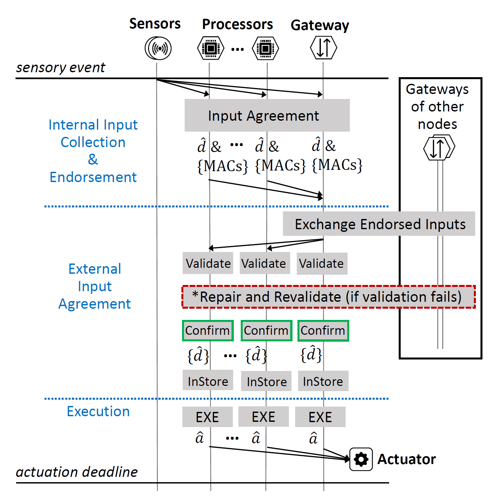
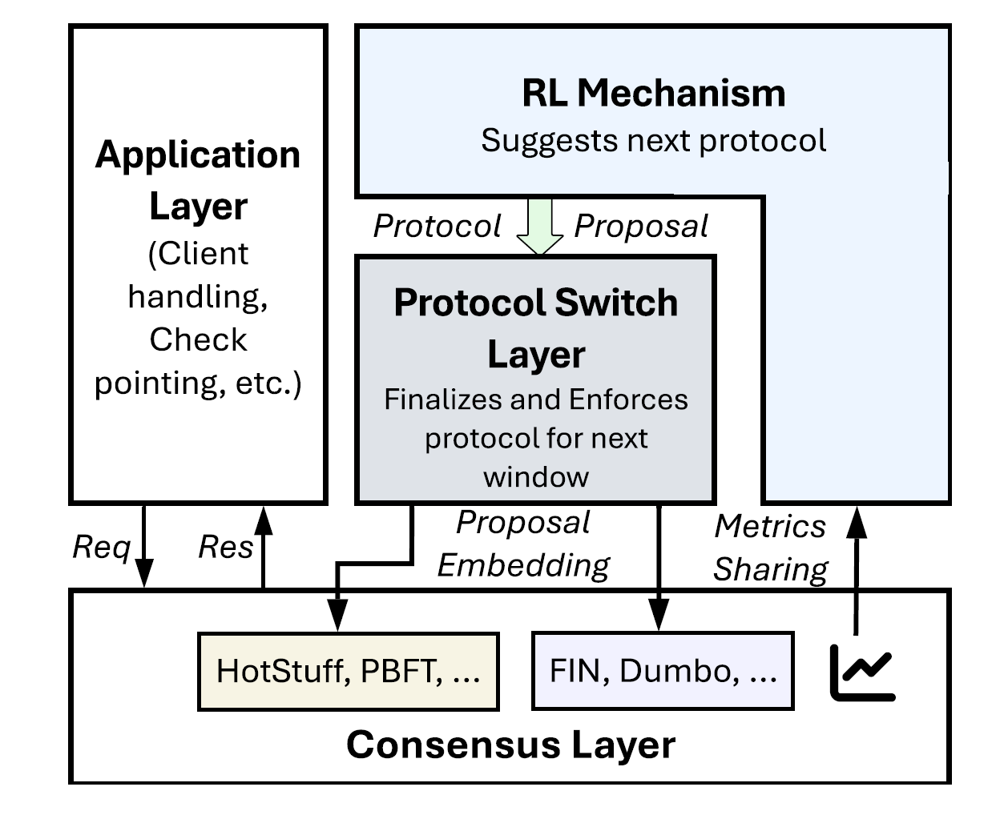
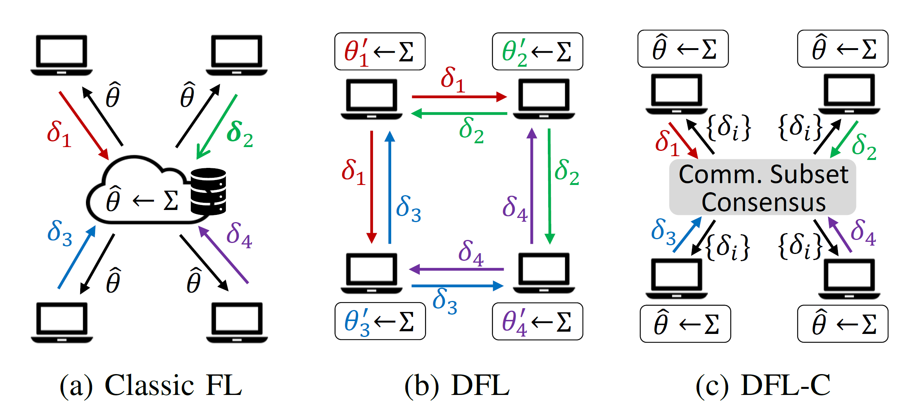
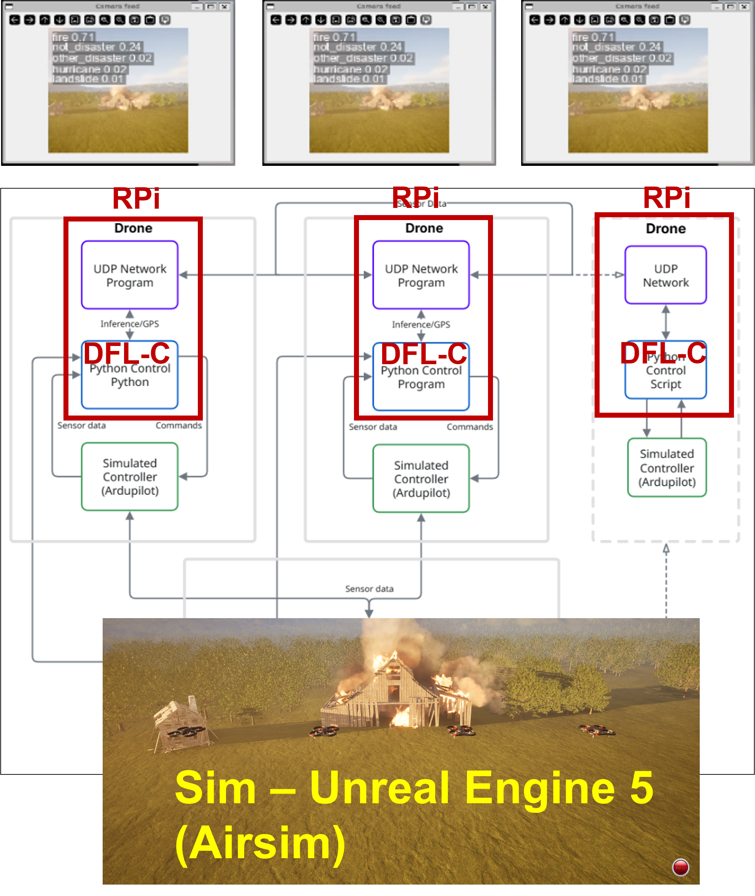

CAREER: Foundations of Operational Resilience and Secure Communication for Networked Real-Time Systems
Project Description
Real-time systems underpin applications that require timely responses to sensor data, and emerging scenarios, such as autonomous vehicles and industrial automation, demand precise coordination among multiple such systems. However, coordinated real-time applications still face significant safety risks due to faulty, even compromised, components and the volatility of inter-system communication. The project’s novelties center on developing foundational principles that enable multiple real-time systems to carry out coordinated operations correctly and safely with timeliness guarantees even under attacks and volatile communication conditions. The project's broader significance and importance lie in its real-time coordination principles and security mechanisms that can be extended to general security-critical daily applications. This project also strengthens the nation’s workforce in network and computer system security through integrated educational activities catered to students in higher education and the public.
This project aims to develop a novel architecture called RESONET to enable multiple real-time systems to perform coordinated operations with strong fault tolerance and real-time guarantees. The research is organized into three complementary thrusts. The first thrust focuses on foundational cross-system fault tolerance principles, ensuring coordinated operations meet timeliness requirements even in the face of component failures. It adopts a layered consensus-based approach enhanced by reinforcement learning that dynamically adapts the consensus parameters to network conditions. The second thrust provides a secure communication layer necessary for the above consensus-based approach by designing lightweight, group authentication and key establishment protocols to secure both intra- and inter-system communications among system components. The third thrust provides the last line of defense for individual systems by developing an intrusion detection mechanism that detects system intrusions and failures and forecasts imminent timing violations. The project builds a drone fleet and an automotive communication network to support the validation of developed prototypes and to serve as platforms for hands-on educational activities. All research outcomes and educational materials, including tutorials, presentations, publications, and open-source software, will be made publicly available online.
Scientific Impact
The project will advance the state-of-the-art in real-time systems and network security by developing foundational principles for coordinated operations among multiple real-time systems with strong fault tolerance and timeliness guarantees. The project will also provide a secure communication layer and an intrusion detection mechanism to ensure the safety and security of these systems.
Broader Impact
The project's potential broader impact relate to security-critical daily applications, potentially transforming how real-time systems are deployed and managed in critical transportation and industrial automation infrastructure. The project will also strengthen the nation’s workforce in network and computer system security through integrated educational activities catered to students in higher education and the public.
Research Results

PACT - Fault-tolerant Collaborative Real-time Control
PACT tackles the problem of getting multiple autonomous real-time systems (vehicles or drones) to react together in real time when some components might be faulty. Today, each vehicle can already use redundant onboard processors to tolerate faults internally (I-SMR), but extending this to coordination across vehicles is hard because wireless links are unreliable and different vehicles sense events differently.
PACT's solution has three parts. First, it frames the problem into three timing regimes: the local fault-tolerant step can't finish in time, only the local fallback is ready, or both local and global coordination finish before the deadline. Second, it builds a global replication layer (G-SMR) on top of each vehicle's local one. When a vehicle detects an event, it certifies the detection locally, then broadcasts it with cryptographic endorsements. Receiving vehicles validate, repair if needed, and record the input in a consistent global order. A key property is that this repair process can't cause honest processors to record conflicting inputs. Third, a statistical deadline predictor decides whether to even attempt global coordination — if it's unlikely to finish in time, vehicles just use their local fallback.
Evaluation on truck platooning and conflict-zone access control shows warnings arrive well before local detection, with sub-3% deadline miss rates at 16 nodes.

HotSwitch - Intelligent BFT Protocol Adaptation
No single BFT consensus protocol works well under all network conditions. Leader-based protocols like HotStuff are fast when the network is stable but degrade badly when an attacker targets the leader with delays. Leaderless asynchronous protocols like FIN are resilient to such attacks but carry higher overhead when the network is fine.
HotSwitch solves this by letting the system switch between protocols on the fly. It has two main parts. First, a protocol switch layer that piggybacks switching votes onto the existing consensus messages — so nodes can agree on which protocol to run next without needing a separate consensus round. A switch happens when 2f+1 nodes vote for the same target protocol within a time window. This keeps switching cheap and safe. Second, a reinforcement learning module (DQN) at each node that observes throughput, latency, and network delays to propose which protocol to switch to. Nodes synchronize their metrics through the consensus layer so their RL agents train on the same data.
Experiments on 10 nodes show HotSwitch matches HotStuff's performance under stable conditions and switches to FIN under adversarial delays, reducing latency by up to 80% compared to BFTBrain, the closest prior work, which lacks asynchronous protocol support and uses a throughput-only reward signal.

DFL-C - Model-Consistent Byzantine-resilient Decentralized Federated Learning
Standard decentralized FL lets nodes only aggregate updates from neighbors, causing models to diverge across the network. This is dangerous for missions needing uniform decisions. It also makes Byzantine attacks easier — adversaries can equivocate (send different updates to different peers) and dominate a victim's local neighborhood even while being a minority overall.
DFL-C solves this by inserting an asynchronous common subset (ACS) consensus protocol into each training round. All honest nodes agree on the same set of at least N−F model updates, then aggregate deterministically to produce an identical global model. Equivocation is blocked naturally since ACS's reliable broadcast detects conflicting proposals. A dual-domain trust scoring scheme further penalizes nodes for consensus misbehavior (equivocation, non-responsiveness) and poor update quality (spatial outliers, temporal instability), while also accelerating consensus by prioritizing trusted nodes' proposals.
Experiments on 4–13 nodes show DFL-C matches centralized FL accuracy, beats the state-of-the-art BALANCE — especially under non-IID data with Byzantine nodes — and adds moderate consensus overhead relative to training time.
Textbed Development

Drone Swarm Software-in-the-Loop Testbed
This is our initial Software-in-the-Loop (SITL) testbed for drone swarm research in ad hoc UAV disaster detection missions. Built on Unreal Engine and AirSim, it models disaster scenarios (e.g., fires) where multiple simulated drones perform classification and consensus over a decentralized network. Each drone runs a UDP network program and a Python control program on top of a simulated flight controller (ArduPilot), while drone camera images are generated from the Unreal Engine environment. This testbed was mainly built and tested by undergraduate researcher Cameron Lira. (Repository link)
Acknowledgment
This project is supported by NSF under award #2442382.